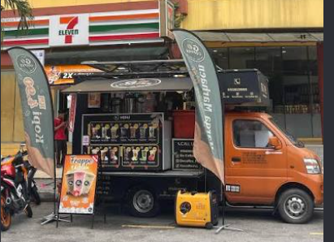
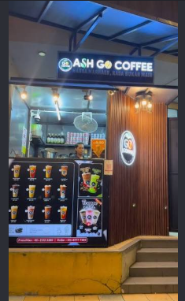

KE RUTIN ANDA
CERITA KAMI
Bermula di jalan raya. Membesar bersama setiap cawan.
Ash GO Coffee bermula dengan sebuah food truck dan idea yang mudah: menjadikan kopi sedap lebih mudah ditemui. Hari ini, kedai dan setup bergerak kami meneruskan semangat yang sama — satu minuman yang dekat di hati, satu sapaan mesra, satu hari yang baik pada satu masa.
ashGOcoffee